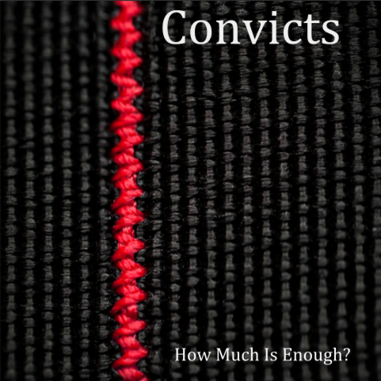

Design a Band Challenge
Challenge Information:
Design Thinking
Design thinking is using empathy to create for the people. To empathize with other people's thoughts as to what they enjoy or like the most and to try to solve problems by using empathy. We are studying it because sometimes design thinking helps with coding and creating for others. We are also studying it to get input on other ideas and actually use the input to not create something that really has no use or doesn’t fit with the outside ideas.
DEEP Design Thinking
In this challenge, we used the DEEP design process to design a band. The first step of the DEEP process is discover. In the discover step we brainstormed different band names and explored the meanings. We compared the different names and used those ideas to create our own band name. In the empathize step we had an empathy interview where we interviewed some people to see what font, color, etc. they liked best. We then applied that information to our album cover. In the experiment step, we thought about what seemed better for our band name and put it together to experiment new ideas. In the produce step we finalized our work and created our band to show to the people. Of course we used the ideas from the people we interviewed and created what we think they would enjoy.
Album Cover
A big piece of this challenge was to create an album cover for the band. I chose the picture, font, and colors I used for my album cover based off of my empathy survey results. My empathy survey indicated that I should use a serif font. The colors I should use resulted in definitely black, red, white, blue, and purple. I should also use a realistic photo for my album cover. This resulted in my red thread/rope line across the picture and a black background, it’s mostly realistic but also has some abstract meaning. I used serif font for my band name and album title.
Convicts
Band Biography
Before Convicts was turned into a band, lead singer, Eduardo Lopez, had gone through a rough time for
about 8 months. His best friend and drummer, Rubykens, had tried to get him on the right path of his life
through music and art but failed. Eduardo had been to jail many times for drug use before he had been
placed in a prison for bank robbery because he went broke and needed the money for more drugs.
Eduardo was sent to the prison for 5 years. He had Ruby visit him in prison to help turn his life around
when he got out. He thought of many things he could do when he gets out and actually study or get a
good job. During recreational time, he got the idea of forming a band from an older inmate. The older
inmate was named Fred, he had been banging on buckets and had a rhythm to it. Eduardo noticed that
he had been tapping his foot to the beat and later ended up humming. He quickly ran to the telephone
and dialed Ruby’s number. He told her his idea and how he wanted his band to be. He told her that he
wanted her to be his drummer and create music forever. This is a dream he wanted.
After his 5 years, Ruby had set up equipment in her basement to prepare. Eduardo had written some
songs while he was in his bunk and brought it over to Ruby’s house. He was so excited about his newly
prepared songs that he ended up spreading the word to old friends from high school. Everyone was so
excited and happy for Eduardo that they immediately started helping. Eduardo reunited with many old
friends like, Amelia Rodriguez. She helped him book a show at a cafe. A lot of Eduardo’s friends showed
up and cheered him on. That’s when Eduardo and Ruby decided to make the band, Convicts, their first
album titled, How Much Is Enough? Which meant how much of this idea is enough because Eduardo
was so excited he was turning his life around.